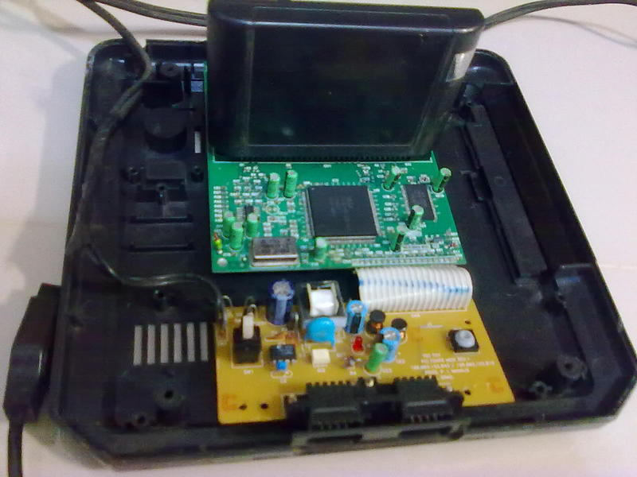
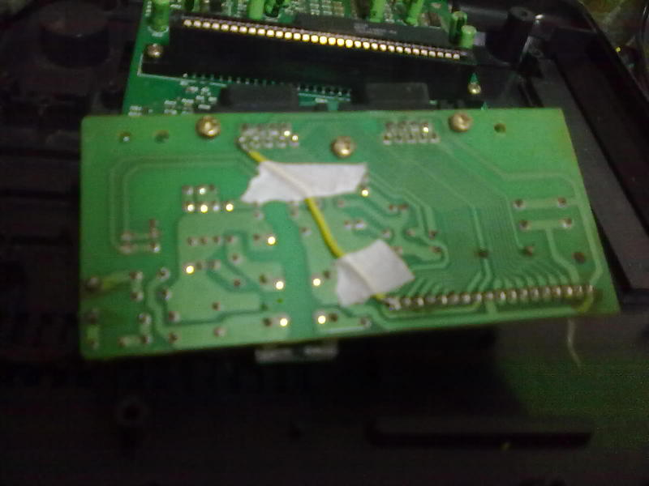
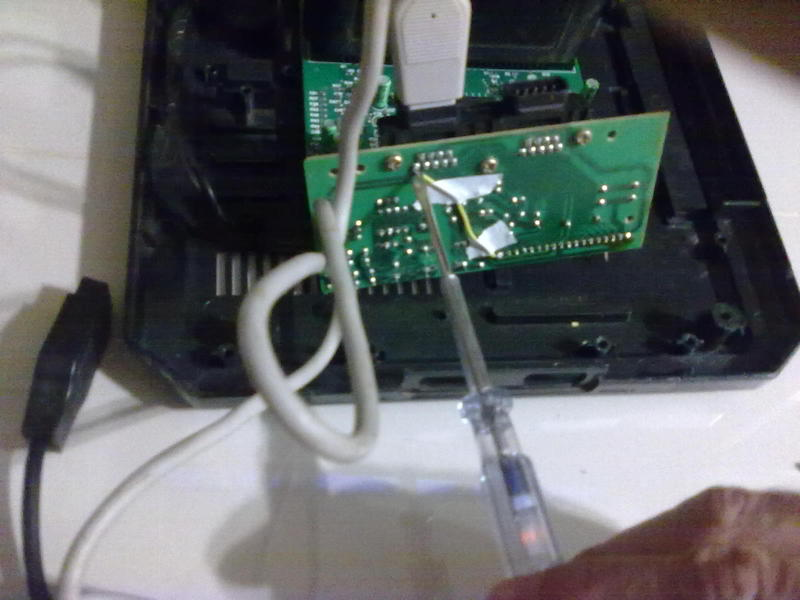
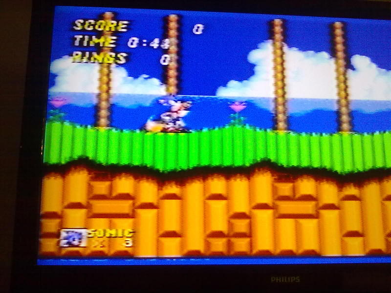

Mega Drive - Reparando conector de joystick do Mega Drive 3
:::. Por Duds - Este fim de semana saí com o Giga e adquiri numa feirinha poeirenta um Mega Drive III (modelo 97) com a carcaça furada e um par de controles Aqua Pad para o mega (ambos "no estado"). A única garantia que eu tinha era que teria que pagar para levá-los comigo. Minto. Também tinha a garantia de que tudo aquilo já tinha sido aberto e fuçado exaustivamente por técnicos e curiosos até o último milímetro.
_________________________________________________________________________________
Após uma boa lavagem, um pingo de solda e um ajuste na imagem através de um trimpot, para a minha alegria o Mega ligou e funcionou meia vida (com uns tiltinhos esporádicos na imagem, mas nada que atrapalhe a jogatina).
Após testar os controles Aqua Pad, vi que um tinha problema no circuito (deixei pra mexer nele outro dia). O outro controle precisava de transplante de peças pláticas do primeiro controle irmão e de 3 pingos de solda no circuito, mas ainda assim não funcionava o direcional "pra cima". Tentei de tudo pra tentar fazê-lo funcionar, em vão. Resolvi então testar ele no conector do controle 2.
EUREKA !!! Funciona!! O controle estava perfeito, funcionando para todos os lados! Wuhulll!!!! Opa... mas peraí... isso então só podia significar que o conector do controle 1 do meu mega drive III está bichado
!!! Funciona!! O controle estava perfeito, funcionando para todos os lados! Wuhulll!!!! Opa... mas peraí... isso então só podia significar que o conector do controle 1 do meu mega drive III está bichado . Testei o conector com outro controle, era oficial: o conector do joystick 1 do meu Mega Drive estava com defeito.
Sem desistir, abri novamente o console para dar outra olhada.
. Testei o conector com outro controle, era oficial: o conector do joystick 1 do meu Mega Drive estava com defeito.
Sem desistir, abri novamente o console para dar outra olhada.

O console é daqueles mais novos, onde tudo é simplificado e a placa é minúscula. É possível perceber que não tem uma fonte de alimentação separada, o circuito transformador de tensão é feito principalmente através de um conjunto de diodos e conta com um mini transformadorzinho que já está barulhento por sinal. Nota-se que essa "fonte" está embutida na mesma placa que recebe os conectores dos controles.
Com o videogame ligado e com uma chave de teste (dessas chaves de fenda de eletricista que acendem uma luzinha quando há corrente), identifiquei no verso da placa a entrada 110/220V (luz muito brilhante), um estágio intermediário de tensão (luz de médio brilho) e outros pontos de tensão mais baixa (luz bem fraquinha).
Ainda no verso da placa, toquei também com a chave na solda dos pinos do conector do controle 1 e identifiquei que havia um pino "sem energia". Conferi o conector do player 2 e notei que todos os pinos possuíam energia. Identifiquei então um problema: havia assimetria na alimentação dos conectores, um pino estava sem alimentação quando comparado com o outro conector. E agora? Haveria algum circuito ou chip com problema em algum ponto do videogame?
Como todos sabem, as trilhas nas placas de circuito impresso são substitutos de fios, sua única função é conduzir um sinal elétrico. Segui então visualmente a trilha do pino que estava com problema e notei que ela "desaguava" por um cabo flat direto na placa mãe (se é que se pode chamar aquela plaquinha de placa mãe). Enfim, resolvi passar a chave de teste naqueles pinos que soldavam o cabo flat às trilhas dos conectores para conferir se havia energia e seguir inversamente o rastro do pino defeituoso. Esbarrei no reset sem querer, reiniciei o Mega. Continuei seguindo pino a pino. Todos funcionando.
OPA, todos funcionando? Então HÁ alimentação para o pino defeituoso, no entanto, essa alimentação se perde em algum lugar pela trilha daquele ponto medido que estava funcionando até o pino do controle. O problema só pode estar nessa trilha, mas visualmente, não vejo nenhum trincado, riscado ou dano na trilha, Me parece tudo ok. Mas estranhamente essa trilha não conduz o sinal elétrico até o pino (e consequentemente não se comunica com o controle).
POSSÍVEL SOLUÇÃO: fazer um bypass. Soldar um simples fiozinho direto do pino do conector defeituoso até o pino correspondente do cabo flat que vai para a placa mãe, conforme as fotos a seguir:

Após a solda:

Depois de tudo pronto, tocando com a chave, notei que a corrente voltou ao pino (óbvio).

Suponho que o problema tenha sido resolvido. Vamos testar. E o resultado? Confira abaixo:

Fiquei feliz ao ver meu Sonic olhando pra cima . Mais uma sucata que viveu feliz para sempre!
Como moral da história fica um aviso a todos: NUNCA CONFIEM NAS TRILHAS DAS PLACAS DE UM CIRCUITO IMPRESSO!!! Elas podem ser traiçoeiras. Em caso de defeito sem causa, verifiquem a existência de sinal elétrico nas trilhas, sempre que possível.
. Mais uma sucata que viveu feliz para sempre!
Como moral da história fica um aviso a todos: NUNCA CONFIEM NAS TRILHAS DAS PLACAS DE UM CIRCUITO IMPRESSO!!! Elas podem ser traiçoeiras. Em caso de defeito sem causa, verifiquem a existência de sinal elétrico nas trilhas, sempre que possível.
Acesse o Trombone e comente sobre essa matéria!


Aqui, vou apresentar a restauração de um controle de SNES que comprei em péssimo estado numa feirinha da minha cidade, e que agora está lindinho funcionando perfeitamente. Confira as dicas, e faça uma restauração você também
Restaurando um controle de PSX
Peguei o mais feinho e judiado dos controles para fazer esse artigo. O coitado estava encardido na parte de cima, e debaixo dele encontrei arranhões nas partes de apoio da mão, e bastante sujeira acumulada nas inscrições. O conector do cabo estava muito arranhado e sujo tambem, o cabo então nem se fala... sujava a mão só de pegar